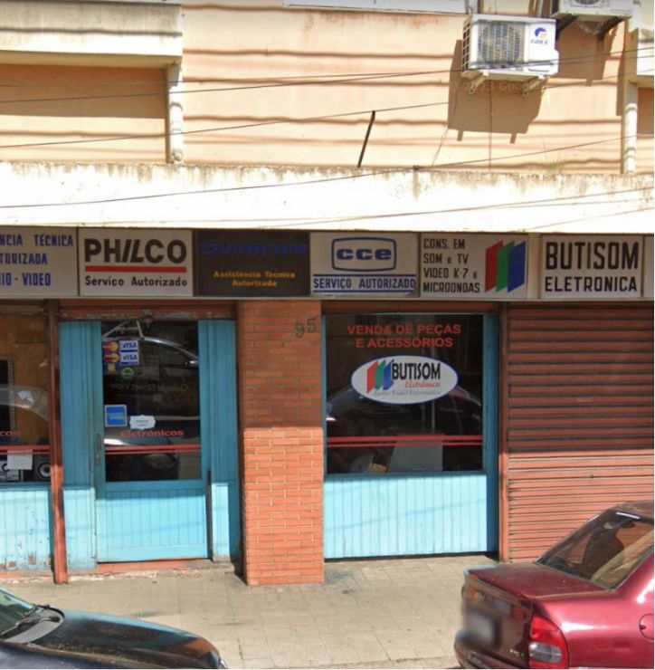

Assistência técnica autorizada em TVs, micro-ondas e áudio.
Consertos em TVs LED e LCD, micro-ondas, áudio e vídeo. Loja tradicional, com atendimento direto e orçamento antes do serviço.
O que consertamos
Eletrônica de áudio, vídeo e cozinha, feita por quem entende do assunto.
TVs LED e LCD
Sem imagem, tela escura, sem som, não liga ou com defeito na fonte e nas placas.
Micro-ondas
Não liga, não aquece ou painel com defeito, com todo o cuidado de segurança.
Áudio e vídeo
Aparelhos de som e equipamentos de áudio e vídeo, dos antigos aos atuais.
Serviço autorizado
Assistência autorizada de marcas como Philco e CCE, além de peças e acessórios.
Tradição e atendimento de perto
A Butisom está no ramo há muitos anos e continua atendendo de perto: você explica o problema, recebe o diagnóstico e aprova o orçamento antes do conserto.

Como funciona
Simples e sem surpresa no final.
Conte o defeito
Chame no WhatsApp ou traga o aparelho até a loja.
Receba o orçamento
Diagnóstico claro, com valor combinado antes de começar.
Retire pronto
Aprovado o orçamento, consertamos e avisamos você.
Nos chame
WhatsApp / Telefone(53) 98124-1499
EndereçoR. Gen. Neto, 495 - Centro, Rio Grande - RS, 96200-010
HorárioSegunda a sexta: 9h às 12h e 13h30 às 18h
Sitebutisom.com.br